|
|
HELP FIND THE FOLLOWING LOCATIONS
PAGE 55
THE SAINT: The Gentle Ladies (Jeremy Summers: 1963)
Unknown 1 – The house of the Warshed sisters.
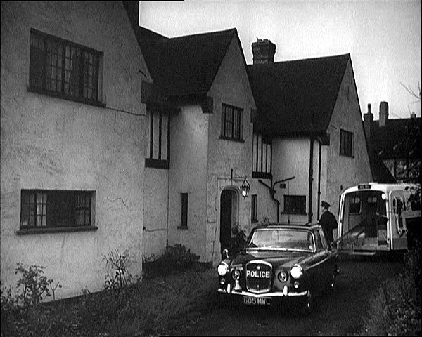
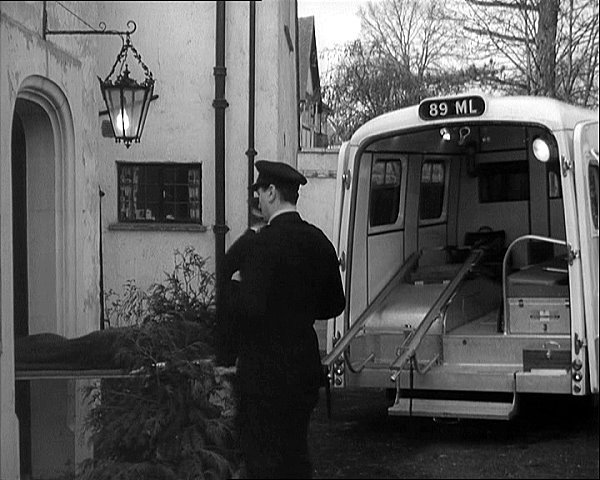
THE SAINT: The Romantic Matron (John Paddy Carstairs:1962)
Plaza de la
República, Buenos Aires, Argentina
-
Simon Templar is visiting Buenos Aires.
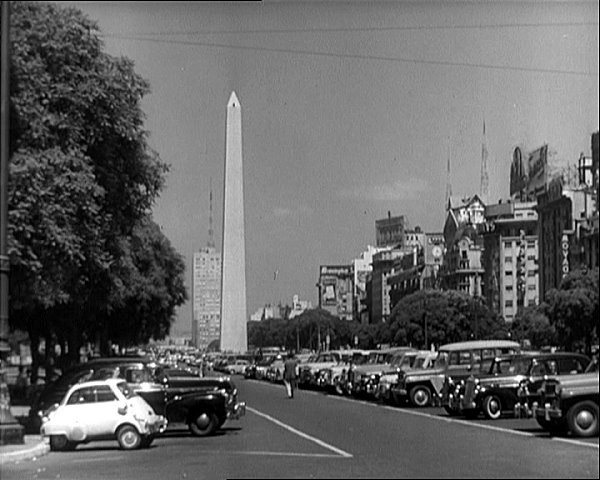
Casa
Rosada, Buenos Aires, Argentina -
Simon Templar is visiting Buenos Aires.
(Identified by Sietse Postma, May 2022)

Dieppe, Normandy, France - Simon Templar is sitting in bar in Buenos Aires (Place du Puits Salé).
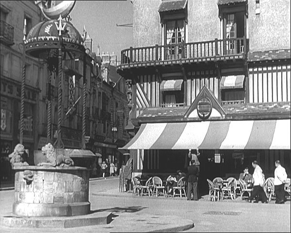
Unknown 2 - Across the street a box of gold boulion is being loaded into an armoured security van.
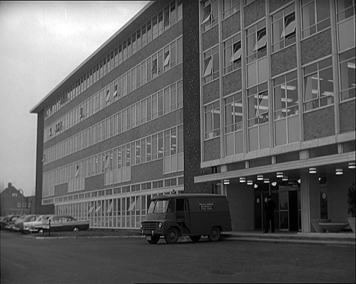
L14: The Sun Engraving Company Ltd., Whippendell Road, Watford
(redeveloped) - The security van drives out of town passing a large factory.
(Identified by Geoff Dodd, February 2025)

Unknown 4 - A villain watches from his car as the security van passes.
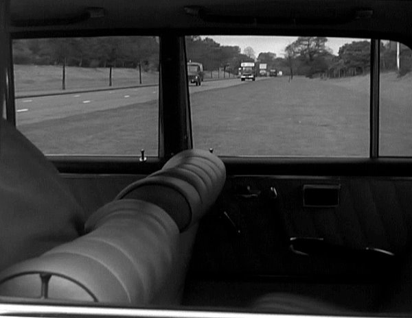
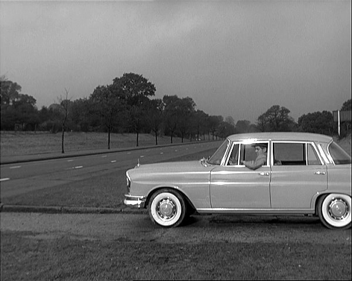
Southwest vehicle access subway, Heathrow Airport (redeveloped) - Posing as road workers, the villains fill the road bridge tunnel with gas.
(Identified by Jamie Sturgeon, January 2026) *
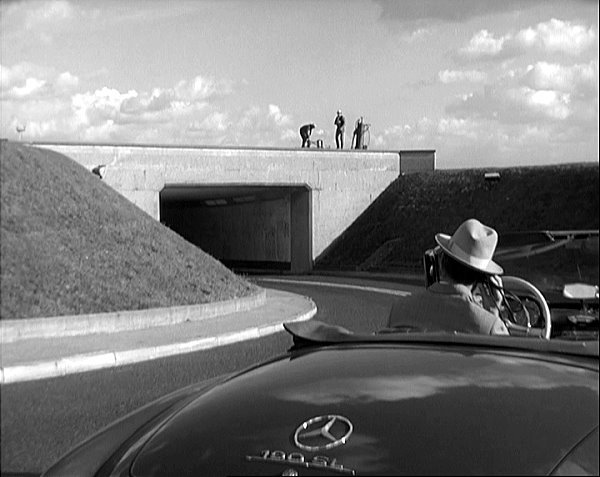
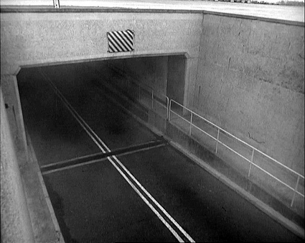
Hipódromo de San Isidro, San Isidro, Buenos Aires, Argentina - *
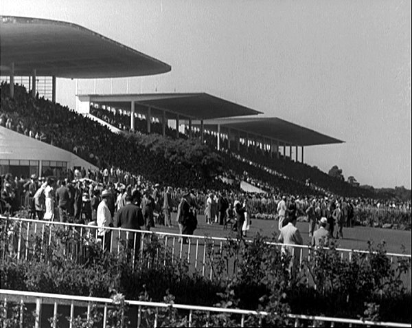
Via Vittorio Veneto, Rome, Italy -
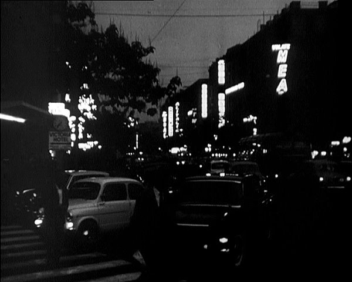
Unknown 7 -
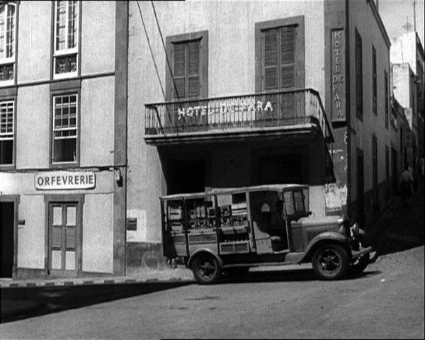
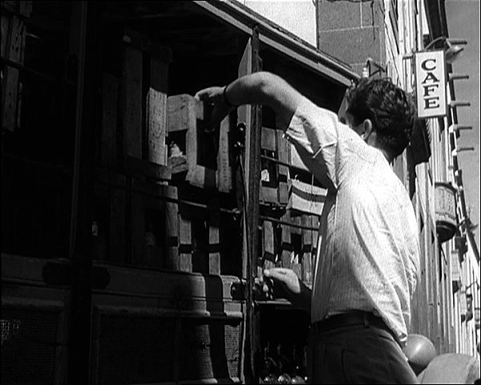
Unknown 8 -
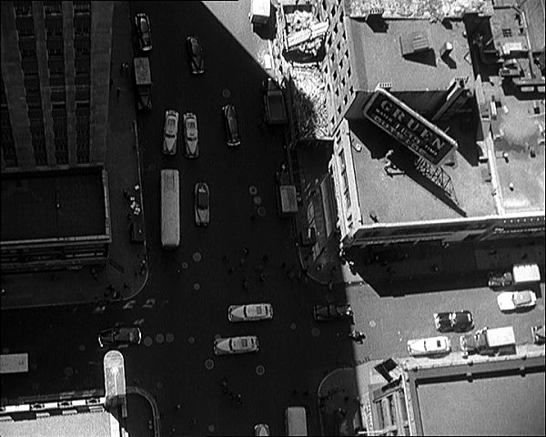
Doney Café, 125 Via Veneto, Rome
- *
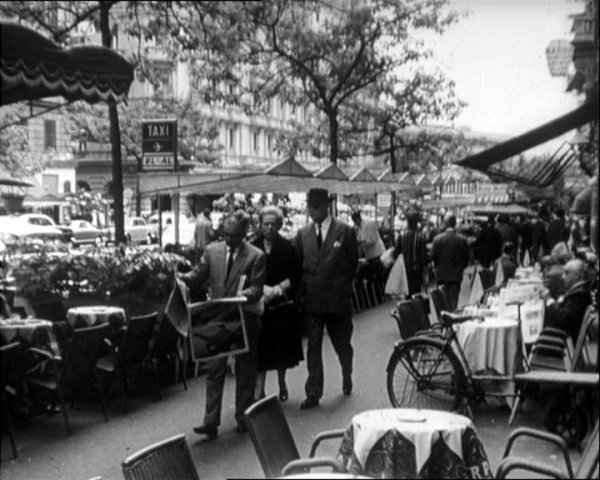
THE SAINT:
Where the
Money Is (Roger Moore: Summer 1968)
Unknown 1
- Simon and Jenny Kersh
take refuge from the kidnappers in a deserted
farmhouse.
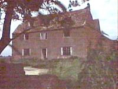
O2: Ridge
Farm, Crossoaks Lane/Deeves Hall
Lane - At the end of the episode the kidnappers
take Simon to pick
up the ransom money from this barn.
(Identified by Geoff Dodd, 4th May 2013)

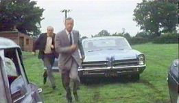

THE SAINT:
A Double in
Diamonds (John Gilling:
February/March 1967)
Gloucester Terrace,
W2 - Simon follows
Valerie's taxi and watches as she enters her flat.
(Identified by Geoff Dodd, 27th
November 2009)

Unknown 1 - When he hears the train coming, Nicholas (Ferdy Mayne) drives his car to the nearby wood. The train comes to a halt Garton (John Clive), Pierre (Anton Rogers), Kate (Yolande Turner) and the kidnapped Veronica (Cathy Graham) jump out and scramble up the embankment and get into the car.
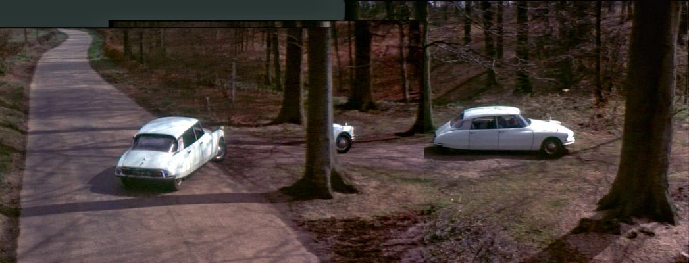
Unknown 2 - Nicholas drives away with Garton, Pierre, Kate and the kidnapped Veronica.
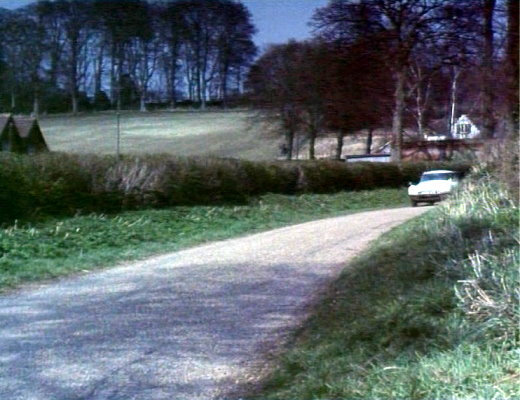
Think you know a spot? Need a bigger image? Email me.
< Previous | Index | Avengerland | Next >
Copyright © 2021 Anthony R. McKay